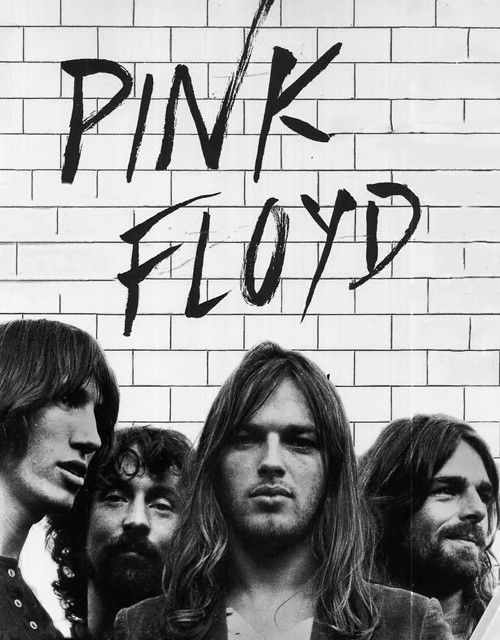

All About Rock!

There are many genres of Rock, the most popular being alternative and classic rock. Some examples of rock music would be progressive rock or death metal.
|  |
Rock music first grew out of the rock’n’roll movement of the 1940s and 50s, which itself was inspired by country and African-American rhythm and blues from the 1920s and 30s. Even from its inception, rock music has been constantly evolving, and continuously creating subgenres that can be sourced from all over the world.While rock’n’roll had been increasing in popularity in the US for several years, it wasn’t until 1955 that Bill Haley’s Rock Around The Clock reached No 1 in the charts, paving the way for rock music to become a prominent part of music culture. At that time, there were many popular solo artists including Elvis Presley, Chuck Berry, Jerry Lee Lewis, and Carl Perkins. During this period, musicians were moving away from the acoustic guitar and picking up electric guitars instead.
There are many famous rock musicians who remain legends through out time. Here are a few of the most famous.